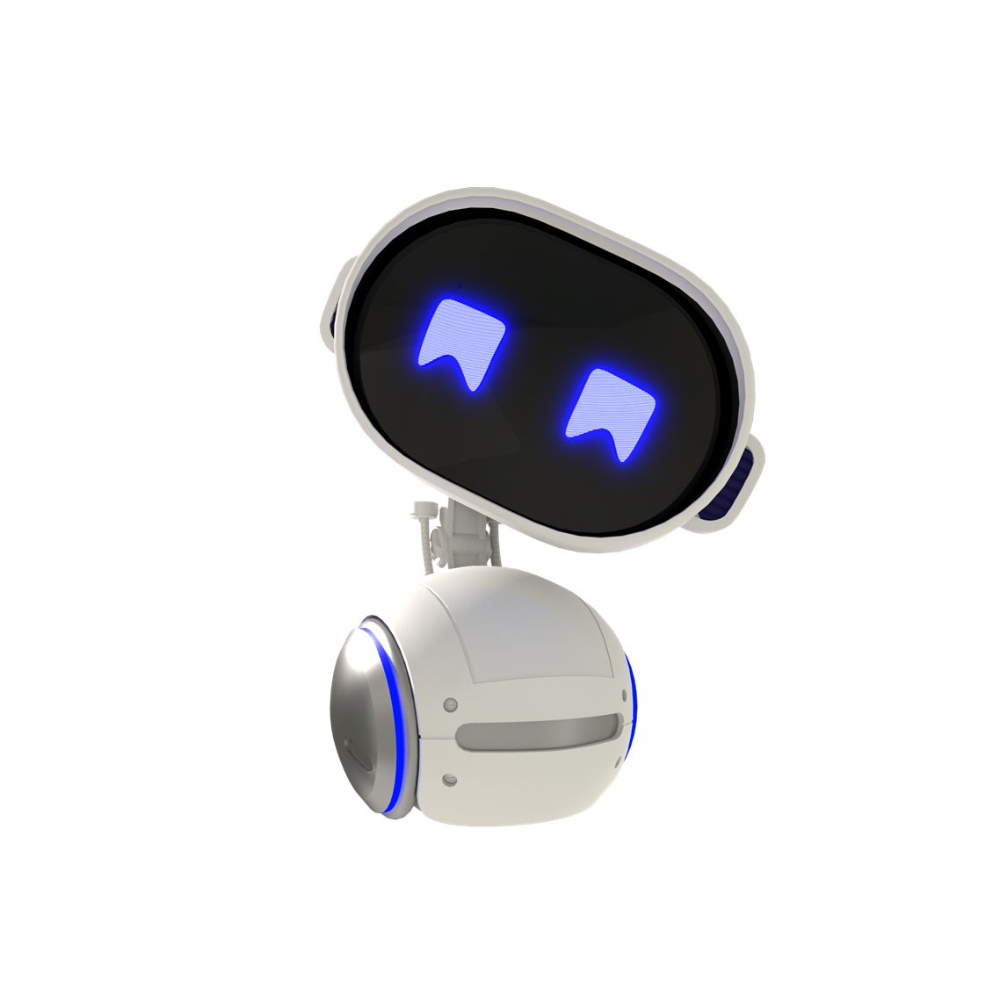

✦ ✦
✦
✦
✦
✦
✦

Welcome!
Como criar um
Prompt Profissional
Lucas Nascimento
Data Operations Team
→ Navegue com as setas!
Checklist: Criando seu Prompt ✦
1. IDENTIDADE: Defini persona específica?
2. MISSÃO: Especifiquei a função claramente?
3. METODOLOGIA: Listei os princípios?
4. RESTRIÇÕES: Adicionei regras NUNCA?
5. EXEMPLO: Incluí Antes/Depois?
6. ATIVAÇÃO: Comando de ativação no final?
TÉCNICA: Usei CAIXA ALTA para ênfase?
TÉCNICA: Reforço de regras no final?
clique para marcar ✓